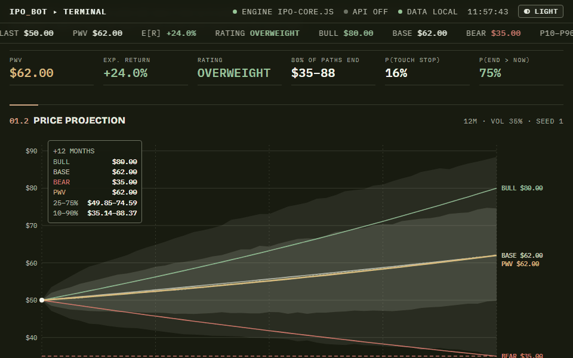

IPO bot
An IPO and stock research assistant on Claude that answers in a one-page memo, then lets code check every number in it.

The parts that run without an API key: every NYSE ticker the SEC lists to choose from, a memo's scenarios drawn as a price projection, sizing a purchase by your own rules, and checking a memo's numbers. The sizing and checks are ported from the Python and tested against it case by case; the projection uses the same probability-weighted value and rating thresholds.
What it does
Ask about an IPO, a listed stock or the market. The bot reads SEC filings, XBRL financials, FRED macro series, market data and the web, does every calculation in a calculator tool, and answers in one page: a rating, bull, base and bear scenarios that add up to 100%, a probability-weighted value, a stop-working price (where it would drop the view), dated catalysts and sources. An IPO gets two ratings, because the offer price and the first trade are different prices for different buyers.
With a portfolio file loaded it decides buy, add, hold, trim or sell, but it never chooses the size: the smallest of four limits from your own rules does (risk per trade, position cap, sector cap, cash floor).
Why trust a number in it
- Eleven accuracy checks run before every answer: identity (ticker, exchange, share class), freshness, reconciliation (market cap, EV, multiples, parts to totals), periods and units, outliers, the primary filing, scenario consistency, citations, and "unknown" instead of a guess.
- A KEY NUMBERS block ends every memo, and
verify.pyrecomputes it: the maths, the scenario rules, the rating thresholds, sources and dates. The demo's checker is the same code. - A second model audits the answer against its sources, rule by rule, with a schema-checked pass or fail.
- A test kit: exact calculation cases, hallucination traps (a fake company, a made-up ticker, a future date), a tools-off stale-data test, rule tests, a consistency test, and a backtest that cuts the data tools off at the day before an IPO prices.
The keyless bot
python -m bot update runs on a fresh clone with no keys. On a GitHub Actions schedule it collects S&P 500
prices, Treasury yields, the VIX and the IPO pipeline from public sources, each behind an adapter with a fallback, and predicts
whether each stock closes higher the next day and whether an IPO's first close is 20% or more above its offer, before it lists.
- Point in time: every row in its SQLite store carries the moment it became knowable; first releases are kept, a split's rescaled history is a new version, and triggers refuse any edit of the past.
- Checked data: prices, duplicates, unexplained moves, missing sessions against the NYSE calendar, staleness and missed runs, Yahoo against Cboe within 0.5%, and the IPO checks (offer against range, first trade against the 424B4).
- Honest scoring: a walk-forward backtest against base-rate, random-walk and recent-IPO baselines with Diebold-Mariano and block-bootstrap tests, a scrambled-future leakage test, and live predictions that are never revised.
What the evaluation found
A model that knows how 2009 to 2026 turned out cannot be backtested fairly, so the bot is scored forward: each rating is logged with its price and scenarios. To give it a bar to clear, seven simple prediction algorithms were tested month by month on 30 US large caps, 15 country ETFs and the nine US sector ETFs, each seeing only the prices known on the day.
| Test | Result |
|---|---|
| Multiple testing: 36 algorithm, universe and horizon tests, permutation p-values, false-discovery rate 10% | 4 pass a naive 5% bar; 0 survive the correction |
| Holdout: picked on 2009 to 2017, checked from 2018 | 1 of 5 held up |
| Calibration of 12-month 80% ranges | held the outcome only 70.0% to 77.4% of the time |
| Keyless bot, next-day direction of S&P 500 members, walk-forward 2017 to 2026 (1,196,771 predictions) | Brier 0.2497 against 0.2496 for each stock's base rate once calibrated: no edge (DM p = 0.79) |
| Trading costs, top third rebalanced monthly | a reversal signal ends up 8.4 points a year behind simply holding everything, at 50 basis points a trade |
So simple price signals do not give a 12-month edge that holds up, and ranges drawn from history are too narrow. Both findings went back into the prompt: wider bull and bear cases, and +15% treated as a high bar.
Run it
pip install -r requirements.txt python src/ipo_bot.py "Rate the <company> IPO" # needs ANTHROPIC_API_KEY python -m bot update # the keyless bot: no keys python -m pytest -q tests evaluation/harness # 807 offline tests, free
Limits
- No live run is recorded here: every live test needs an API key and costs credit.
- The benchmark's stock universes are today's survivors, which flatters long-only results; the sector ETFs are the survivor-free check.
- It gives views on securities, not personal advice, and every answer ends with that disclaimer.
Built by Luke Zhang. For information only, not investment advice.